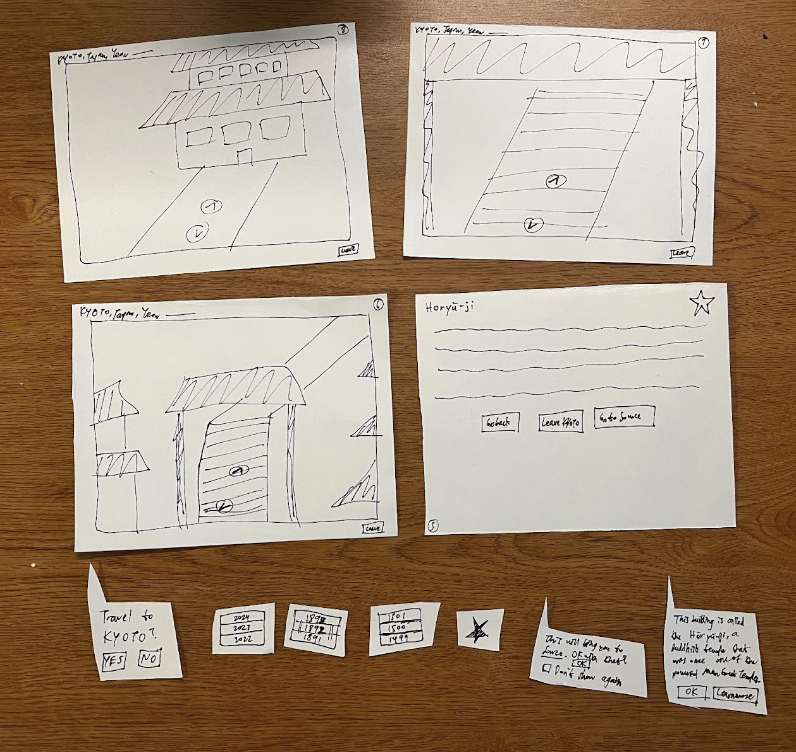
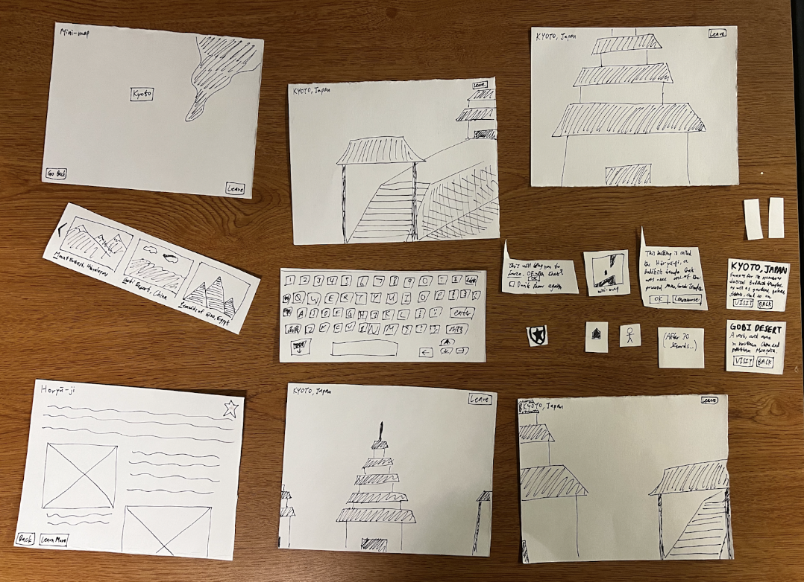
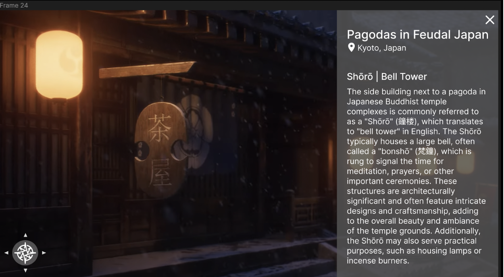

This project all started when our project team member, Rain Yan, was listening to his friend complain about the obstacles to physical travel. They had really wanted to travel to Japan to learn more about its culture over winter break, but found that not only would it take too much time to travel there and back (they needed to be home for Christmas), the costs associated with traveling across the world were not feasible for them. As Rain’s friend gave up their travel dreams for winter break, Rain thought about how he could utilize his skill set to create a much more accessible alternative to physical travel.
This is where Virtual Voyager comes in. Virtual Voyager is a virtual interface that allows users to travel virtually and offers an immersive experience that simulates physical travel in great detail while also providing learning opportunities for users who are interested in learning more about specific landmarks at a travel destination.
This is where Virtual Voyager comes in. Virtual Voyager is a virtual interface that allows users to travel virtually and offers an immersive experience that simulates physical travel in great detail while also providing learning opportunities for users who are interested in learning more about specific landmarks at a travel destination.
IDEATION
We started by brainstorming our own ideas individually. Ben thought of creating a personal budgeting app for people who would prefer more functionality beyond the typical spreadsheet or existing budgeting app. Vedya thought of creating an app that could teach children math by simply taking a picture of math problems. And of course, Rain thought of an interface that would allow for virtual travel.
We each generated our own interview guide, recruiting plan, and a consent script, the whole nine yards. We then took all of this and applied it in our interviews, where we each interviewed at least 3 users to gauge the user demand for our ideas (some of us even did 4 extra interviews). We created pitch slides for our fellow classmates, and pitched our ideas in class.
When we were creating groups for our final project, it took a bit of trial and error but we ended up grouping together and going with Rain’s idea, given that it fit our given timeframe the best (and we all liked the idea). This was when we began to move into our prototyping process.
PROTOTYPING
As we’ve learned in CIS 4120, there are 3 different kinds of prototypes: role, look-and-feel, and implementation prototypes. For the first part of our prototyping process, we created low-fidelity paper role prototypes that represented the main functionalities of our envisioned interface:

Using these role prototypes, we found a few prospective users to evaluate their functionalities, and received very helpful feedback (they disliked the zoom-in feature and appreciated WASD controls over movement similar to an older version of Google Maps) that allowed us to iterate on our paper prototypes and make revisions based on their feedback:

Next, it was time to create high-fidelity prototypes using a mood board and style guide. By utilizing skills learned in class and at UI Camp, where we learned how to use tools such as Figma and Balsamiq, we created high-fidelity prototypes that represented the look-and-feel aspect of our imagined interface:

And again, we sought feedback from prospective users and utilized this feedback to iterate on our high-fidelity prototype. While users gave positive feedback regarding most of the interface, one key thing we were told by some evaluators was to ensure that the interface felt immersive.
IMPLEMENTATION
Because we wanted to really nail down the immersion of our interface (as commented on by our evaluators), we took extra time to ensure that we achieved the immersion that our users sought for in a virtual traveling interface like ours, given that users especially wanted to feel as if they were actually physically at the travel destination. Thus, we implemented a home screen to introduce our users to our interface, and then emphasized work on certain aspects of our interface to ensure this immersion was implemented. A video of our interactive, implementation prototype can be found here:
Yet again, we received valuable feedback from user evaluators and our project TA, Cindy. We took this feedback to heart and iterated yet again on the interface. One key thing that was mentioned was that it was difficult to know which specific landmarks had educational textual descriptions associated with them, which is why we sought to add little blue indicators that would appear at all times to ensure that users could navigate to these landmarks more easily.
However, we were unsure if this change would truly allow for our intended audience to understand how to use our interface to learn more about these landmarks. Thus, we took part in experimentation via A/B testing.
EXPERIMENTATION
A/B testing for us involved taking the two variants of our interfaces and conducting between-subject experimentation, meaning that each user only used one variant of our interface or the other and we compared their results. This would mean decreased bias from learning effects and fatigue but increase bias from differences across subjects. However, we felt that learning effects would lead to large bias (much more so than differences across subjects), especially when considering that we essentially found random subjects to try each variant of our interface.
Our two variants involved one version of our interface where users would have to move up close to a landmark before the textual description describing the significance of a landmark would appear (proximity feature), while the other version of our interface would have the little blue indicators that indicated which landmarks had these textual descriptions and users could toggle seeing these descriptions or not (static toggle). The task we gave our subjects was to tell us a fun fact about two specific landmarks, which would require subjects to use our interface interactively and find the two specific landmarks. We then recorded quantitative data in the form of the time it took each subject to complete their task and qualitative data in the form of surveying subjects for perceived task difficulty with a Likert Scale questionnaire.
Our quantitative results were statistically significant, where the 4 participants who tried the 2nd variant (static toggle system) (M = 70.13, SD = 10.56 (Source)) compared to the 4 participants who tried the 1st variant in the control group (proximity feature) (M = 39.98, SD = 9.38 (Source)) demonstrated significantly lower task completion times, t(6) = 4.27034 (6 degrees of freedom with 2 samples, each of size 4), p = 0.002631. The result was significant at p < 0.01.
Our Likert Scale questionnaire wasn’t statistically significant, where the 4 participants who tried the 2nd variant (static toggle system) compared to the 4 participants who tried the 1st variant in the control group (proximity feature) showed no significant difference in perceived task difficulty, where z = -0.8447, p = 0.20045. The result is not significant at p < 0.05.
While this may be discouraging, we believed that there was some bias involved because of our incomplete 2nd variant at the time, where we asked participants of our 2nd variant to answer our Likert Scale questions as if the interface was fully implemented but forgot to do so for a few of these participants. Thus, they may have found increased difficulty in using our 2nd variant because of some of the issues from the incomplete 2nd variant rather than because the 2nd variant’s static toggle system was difficult. Overall, we believed this data was very encouraging and allowed us to continue implementing the 2nd variant with the understanding that it would facilitate user interaction with our interface.
CONCLUSION
Our final product:
Throughout this entire process, we have continually incorporated our users’ feedback in a way that we hope has led to an interface that can truly become a valuable alternative to physical travel, removing the typical limitations and obstacles associated with it such as time, cost, visa restrictions, and more.
We conclude by thanking our CIS 4120 professor, Professor Head, our project TA, Cindy, and all of our user evaluators for their tireless contributions and feedback, all of which allowed us to create an interface that we’re proud to call our final project. Without their help, we would not have been able to come this far.
Moving forward, we might even continue iterating on this interface to improve on it, because we truly do believe in our interface’s ability to become an alternative to physical travel. While we did learn a lot with this project (from user research to prototyping to experimentation, and much more), we still feel as if there’s lots more to learn, and will continue working on providing a useful and valuable alternative to physical travel. While this may not be the most perfect project, this was the perfect opportunity for us three to come together to create something that hopefully addresses a key problem that people have.
Thanks for reading!